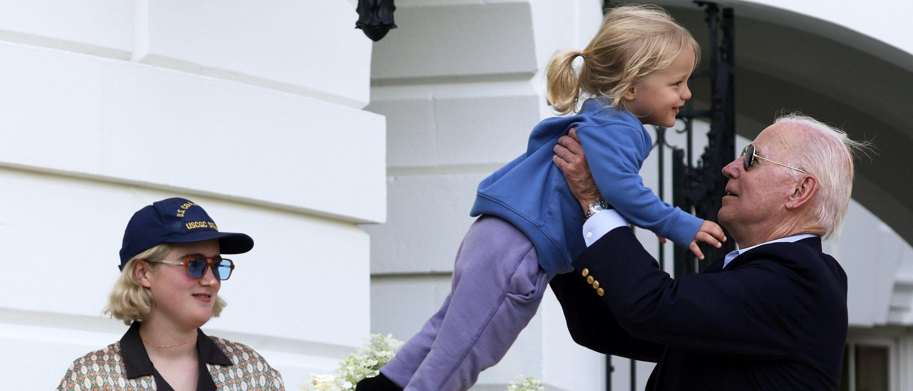

Biden Misremembers How Many Grandchildren He Has Three Times During Fundraiser EventPresident Joe Biden misremembered how many grandchildren he has not once, not twice but three times during a September campaign speech, according to a Monday White House transcript. Biden spoke at a private fundraiser reception in Atherton, California, hosted at the home of Mark Heising and Liz Simons, two billionaire philanthropists. on Sept. 26. The president, while speaking about his family, struggled to remember how many kids his son Hunter Biden has, according to a White House transcript. “And I have my deceased son’s two children, one is now a freshman at the University of Pennsylvania, one is a senior in high school; and my son Hunter has three children — four children, but we’re — they’re very small. Actually, five children — two of them are under the age of four. But they’re in the — and, you know, they’re grown women now,” Biden said during the reception. The pool report detailing excerpts of the fundraiser speech did not make any mention of the president’s apparent gaffe. The White House does not allow the president’s fundraiser or campaign events to be recorded, according to the New York Post. Biden has seven grandchildren which were given to him by two of his children. Hunter Biden, whose children the president misremembered, has five children; 29-year-old Naomi, 22-year-old Finnegan, 21-year-old Maisy, 4-year-old Navy Joan Roberts and 3-year-old Beau Jr. (RELATED: ‘I Have Six Grandchildren‘: Biden Leaves Out Hunter’s Illegitimate Child While Speaking To Kids) The president has previously avoided mentioning Navy John Roberts, whom Hunter Biden had out-of-wedlock. During their time in the White House, Biden and the First Lady Jill Biden have not included Navy in their Christmas stocking decorations. Finally after dodging the topic for years, Biden acknowledged Navy for the first time in July, claiming that the situation involving Hunter Biden, Navy and her mother was not a “political issue” but rather a “family matter.” Several days after, Biden acknowledged his “seven grandchildren” for the first time though he had only referenced his six grandchildren throughout the majority of his administration. The president’s recent slip-up at the fundraiser event comes as concerns about his age continue to grow. Seventy-seven percent of Americans think that Biden is too old to effectively run the country, according to a recent poll. Seventy-three percent of Americans also believe that Biden is too old to run for reelection in 2024, a Monday poll by The Wall Street Journal shows. |
 |